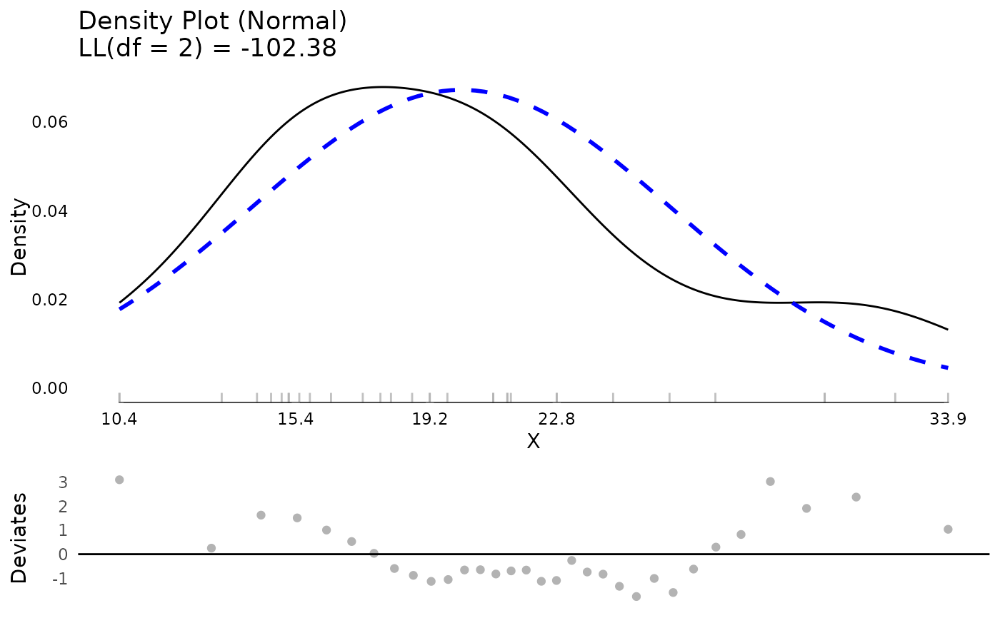

Make plots of testDistribution objects, including density and QQ plots.
Usage
# S3 method for class 'testDistribution'
plot(
x,
y,
xlim = NULL,
varlab = "X",
plot = TRUE,
rugthreshold = 500,
seed = 1234,
factor = 1,
...
)Arguments
- x
A list of class “testDistribution”.
- y
Included to match the generic. Not used.
- xlim
An optional vector to control the x limits for the theoretical distribution density line, useful when densities become extreme at boundary values to help keep the scale of the graph reasonable. Passed on to
stat_function.- varlab
A character vector the label to use for the variable
- plot
A logical vector whether to plot the graphs. Defaults to
TRUE.- rugthreshold
Integer determining the number of observations beyond which no rug plot is added. Note that even if this threshold is exceeded, a rug plot will still be added for any extreme values (if extreme values are used and present).
- seed
a random seed used to make the jitter added for Poisson and Negative Binomial distributions reproducible
- factor
A scale factor fo the amount of jitter added to the QQ and Deviates plots for Poisson and Negative Binomial distributions. Defaults to 1. This results in 1 * smallest distance between points / 5 being used.
- ...
Additional arguments.
Value
An invisible list with the ggplot2 objects for graphs, as well as information about the distribution (parameter estimates, name, log likelihood (useful for comparing the fit of different distributions to the data), and a dataset with the sorted data and theoretical quantiles.
Examples
## evaluate mpg against a normal distribution
plot(testDistribution(mtcars$mpg))

if (FALSE) { # \dontrun{
## example data
set.seed(1234)
d <- data.table::data.table(
Ynorm = rnorm(200),
Ybeta = rbeta(200, 1, 4),
Ychisq = rchisq(200, 8),
Yf = rf(200, 5, 10),
Ygamma = rgamma(200, 2, 2),
Ynbinom = rnbinom(200, mu = 4, size = 9),
Ypois = rpois(200, 4))
## testing and graphing
plot(testDistribution(d$Ybeta, "beta", starts = list(shape1 = 1, shape2 = 4)))
plot(testDistribution(d$Ychisq, "chisq", starts = list(df = 8)))
## for chi-square distribution, extreme values only on
## the right tail
plot(testDistribution(d$Ychisq, "chisq", starts = list(df = 8),
extremevalues = "empirical", ev.perc = .1))
plot(testDistribution(d$Ychisq, "chisq", starts = list(df = 8),
extremevalues = "theoretical", ev.perc = .1))
plot(testDistribution(d$Yf, "f", starts = list(df1 = 5, df2 = 10)))
plot(testDistribution(d$Ygamma, "gamma"))
plot(testDistribution(d$Ynbinom, "poisson"))
plot(testDistribution(d$Ynbinom, "nbinom"))
plot(testDistribution(d$Ypois, "poisson"))
## compare log likelihood of two different distributions
testDistribution(d$Ygamma, "normal")$Distribution$LL
testDistribution(d$Ygamma, "gamma")$Distribution$LL
plot(testDistribution(d$Ynorm, "normal"))
plot(testDistribution(c(d$Ynorm, 10, 1000), "normal",
extremevalues = "theoretical"))
plot(testDistribution(c(d$Ynorm, 10, 1000), "normal",
extremevalues = "theoretical", robust = TRUE))
plot(testDistribution(mtcars, "mvnormal"))
## for multivariate normal mahalanobis distance
## which follows a chi-square distribution, extreme values only on
## the right tail
plot(testDistribution(mtcars, "mvnormal", extremevalues = "empirical",
ev.perc = .1))
plot(testDistribution(mtcars, "mvnormal", extremevalues = "theoretical",
ev.perc = .1))
rm(d) ## cleanup
} # }